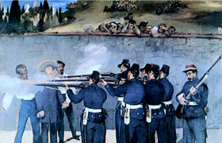

Lezione 17  La corsa alla spartizione del mondo
La corsa alla spartizione del mondo

Nel 1861 gli inglesi, i francesi e gli spagnoli decisero una spedizione punitiva contro il Messico di Benito Juarez. Un anno dopo restarono in campo solo i francesi: Napoleone aveva coltivato il sogno di un impero latino quale base per i commerci francesi e come baluardo contro l’espansionismo degli Stati Uniti.
A capo di questo impero fu designato l’inconsapevole Massimiliano d’Asburgo, fratello di Francesco Giuseppe. Sbarcato in Messico nel 1864, ben presto Massimiliano si trovò a fronteggiare la decisa guerriglia dei partigiani messicani, vigorosamente sostenuti dagli americani. Lasciato solo, Massimiliano, catturato, viene fucilato dagli insorti (1867).
Giosuè Carducci nell’ode Miramar vede nella figura di Massimiliano più una vittima sacrificale che non una figura negativa di “conquistatore”. È la nemesi storica: i figli pagano le colpe dei padri.
Il poeta così descrive l’ansia di vendetta del dio azteco Huitzilopochli:
“… navigando il pelago co’l guardo
ulula - Vieni.
Quant’è che aspetto! La ferocia bianca
strussemi il regno ed i miei templi infranse:
vieni, devota vittima, o nipote
di Carlo quinto
Non io gl’infami avoli tuoi di tabe
Marcenti o arsi di regal furore;
te io voleva, io colgo te, rinato
fiore d’Asburgo;
e a la grand’alma di Guatimozino
regnante sotto il padiglion del sole
ti mando inferia, o puro, o forte, o bello
Massimiliano”
Giosuè Carducci, Odi Barbare